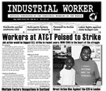

Submitted on Thu, 04/30/2009 - 3:55pm
By Greg Rodriguez,
grodrigueziww@yahoo.com
Rio Grande Valley, South Texas --It is known that nearly one-hundred of the immigrants being detained at the Department of Homeland Security(DHS)/Immigration and Customs Enforcement’s(ICE) Port Isabel Detention Center (PIDC) have been on a hunger strike since April 22, 2009. PIDC is a prison used to detain immigrants arrested by the United States government. It is located in an extremely isolated area of the remote South Texas town called Los Fresnos.
The detainees have resorted to this form of non-violent direct action after months of demanding adequate medical attention and an end to abuses by guards; to no avail.
Submitted on Thu, 04/30/2009 - 3:28pm
By Adam Welch - originally posted here.
 Yet again May Day quickly approaches.
Since 2006 the immigrant rights marches- made up of millions of
undocumented migrant workers along with their supporters, families and
children- has brought back May 1st to its original roots in the US. But
many are still unaware of its origins in US labor history and the
impact this commemorative day still has internationally- such as you
can still walk into neighborhoods in Mexico and find streets such as “Calle Los Mártires de Chicago” (Martyrs of Chicago Street).
Yet again May Day quickly approaches.
Since 2006 the immigrant rights marches- made up of millions of
undocumented migrant workers along with their supporters, families and
children- has brought back May 1st to its original roots in the US. But
many are still unaware of its origins in US labor history and the
impact this commemorative day still has internationally- such as you
can still walk into neighborhoods in Mexico and find streets such as “Calle Los Mártires de Chicago” (Martyrs of Chicago Street).
Below is a short, pamphlet length piece I edited on the origins and radical history of May Day. For an in depth look you might try Paul Avrich’s classic “The Haymarket Tragedy” and AK Press offers a listing of books they carry on the subject here. -AW
What is May Day and why is it called International Workers Day?
May
1st, International Worker’s Day, commemorates the historic struggle of
working people throughout the world, and is recognized in every country
except the United States and Canada. This is despite the fact that the
holiday began in the 1880’s in the United States, with the fight for an
eight-hour work day led by immigrant workers. The recent historic
marches and protests for immigrant rights, which began with “El Gran
Paro Americano 2006,” have brought back into our memories May 1 as an
important day of struggle. Although the history of the day has largely
been forgotten in the United States, it is still actively remembered
and celebrated today by workers, unionists and oppressed peoples all
over the world. In fact you can still walk through neighborhoods in
Mexico and find streets such as Calle Los Martires de Chicago in Oaxaca
City, Oaxaca, commemorating the leaders of the eight-hour day movement
who were imprisoned and executed.
Submitted on Wed, 04/29/2009 - 9:04am
 Ten people from Pittsburgh traveled to Baltimore on April 18, 2009
for a B’More Fair and a Human Rights March hosted by the United Workers
Association (UWA). The United Workers Association is the Human Rights
Organization that organized the Camden Yards cleaners, part time
workers, “temporary” workers hired through a contractor, by putting
pressure on Maryland’s Stadium Authority and Peter Angelos, owner of
the Baltimore Oriels Baseball Club. They coined the terms “SweatFree
Baseball” in reference to the sweatshop working conditions at Camden
Yards at the same time as the Pittsburgh Anti Sweatshop Community
Alliance (PASCA) coined the term in reference to its demand that the
Pittsburgh Pirates accept the testimony of sweatshop workers sewing
Pirates apparel. The UWA came to Pittsburgh for the All Star Game in
2006 and joined with PASCA to make the demand that our local baseball
teams respect the Human Rights of all workers.
Ten people from Pittsburgh traveled to Baltimore on April 18, 2009
for a B’More Fair and a Human Rights March hosted by the United Workers
Association (UWA). The United Workers Association is the Human Rights
Organization that organized the Camden Yards cleaners, part time
workers, “temporary” workers hired through a contractor, by putting
pressure on Maryland’s Stadium Authority and Peter Angelos, owner of
the Baltimore Oriels Baseball Club. They coined the terms “SweatFree
Baseball” in reference to the sweatshop working conditions at Camden
Yards at the same time as the Pittsburgh Anti Sweatshop Community
Alliance (PASCA) coined the term in reference to its demand that the
Pittsburgh Pirates accept the testimony of sweatshop workers sewing
Pirates apparel. The UWA came to Pittsburgh for the All Star Game in
2006 and joined with PASCA to make the demand that our local baseball
teams respect the Human Rights of all workers.
The UWA interviewed 150 workers at three restaurants in Baltimore’s
Inner Harbor development. The interviews demonstrated systemic
violations of workers’ rights such as poverty wages and sexual
harassment. The UWA has begun to process these worker rights violations
by using the International Declaration of Human Rights like a union
contract. By declaring the Inner Harbor a Human Rights Zone, the
restaurant bosses, the developer, the public officials who provided
subsidies to the Inner Harbor developers and the Baltimore community is
made aware that the workers know and intend to exercise their Human
Rights to remedy violations of their rights.
The enforcement of workers’ Human Rights is different from
traditional union organizing in that it emphasizes workers knowing
their rights and exercising them rather than a union contract. The
emphasis is not on achieving a union contract but on the community of
workers that educate one another and provide support to one another on
a daily basis.
Submitted on Tue, 04/28/2009 - 3:56pm

Headlines:
- Multiple Factory Occupations in Scotland
- Direct Action Bloc Against the G20 in London
- Canadian Workers Occupy Auto Parts Factory
Features:
- Workers at AT&T Poised to Strike
- Farewell FW Archie Green
- The Employee Free Choice Act, Class Conditions & Power
Download a free
PDF copy of this issue.
Submitted on Sun, 04/26/2009 - 11:13pm
Happy International Workers’ Day!
Dear Friend,
This Friday, May 1st, is YOUR day, a day to celebrate all working people.
Please take a moment to thank your co-workers, friends, and family members for all the hard work they do every day.
Many people don’t know about the history of May 1st as a workers’ holiday. Here is some information on the roots of May 1st, also called May Day.
ORIGINS
The origins of International Workers’ Day go back to 1886, when hundreds of thousands workers across the United States went on strike. Workers demanded that their 10- and 12-hour workdays be shortened to an 8-hour day with no reduction in pay. Over the next few years, thousands of workers won the 8-hour workday that many of us still enjoy today.
REMEMBERING THE HAYMARKET MARTYRS
We also celebrate in memory of the Haymarket massacre, in which eight labor activists were framed and put on trial by the government. On May 4, 1886, there was a rally at Chicago’s Haymarket Square in support of striking workers from a nearby factory.